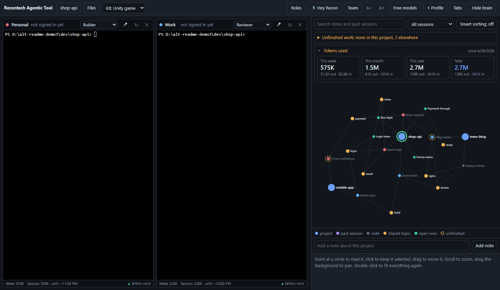

Run your Claude Code terminals side by side and connect them to a shared local brain, built from your past sessions and the notes Claude saves as it works. Every new session picks up where the last one left off.
Free for Windows. Requires Claude Code.

The screenshot uses made-up demo projects.
Claude Code starts every session from zero. This app keeps what you learned yesterday within reach today.
Up to six Claude Code terminals in a grid or tabs, each with its own sign-in, for example personal and work.
Every terminal reads and writes one local memory. A fact one session learns, the next session knows.
The brain keeps each session's title, project, prompts and topics, and shows them as a live graph you can search.
Give them roles such as Manager, Builder, Reviewer and Tester, or make your own. They can read each other and hand work back and forth.
Say "Hey Recon" and a request, and it goes to your Manager terminal. Speech is recognised on your computer.
Tokens used this week, month, year and in total, and under each terminal its own week, session and limit state.
An optional local model labels each session and lists what was left unfinished, with one click to resume.
The app recognises website, mobile, Unity and Godot projects and tells Claude how to work in each.
Write a project's notes to a file in its repository. Teammates who open the project are offered them.
A free-models terminal runs on your own free API keys, kept in a container so it only sees what you hand it.
An Ollama profile runs Claude Code on a model on your own computer, with the same brain.
Windows may show "Windows protected your PC" because the app is new and not code-signed. Click More info, then Run anyway.
The app has no server and no account. Your sessions, notes, settings and keys exist only on your computer, and nothing is sent to the authors or to other users.
The brain is plain files in your user folder. Secrets such as API keys are masked before anything is stored.
The app never reads or stores your Claude login. Claude Code handles it, as usual.
Whatever a terminal works on goes to that terminal's AI provider. The free-models terminal is contained by default, and Ollama keeps everything on your machine.